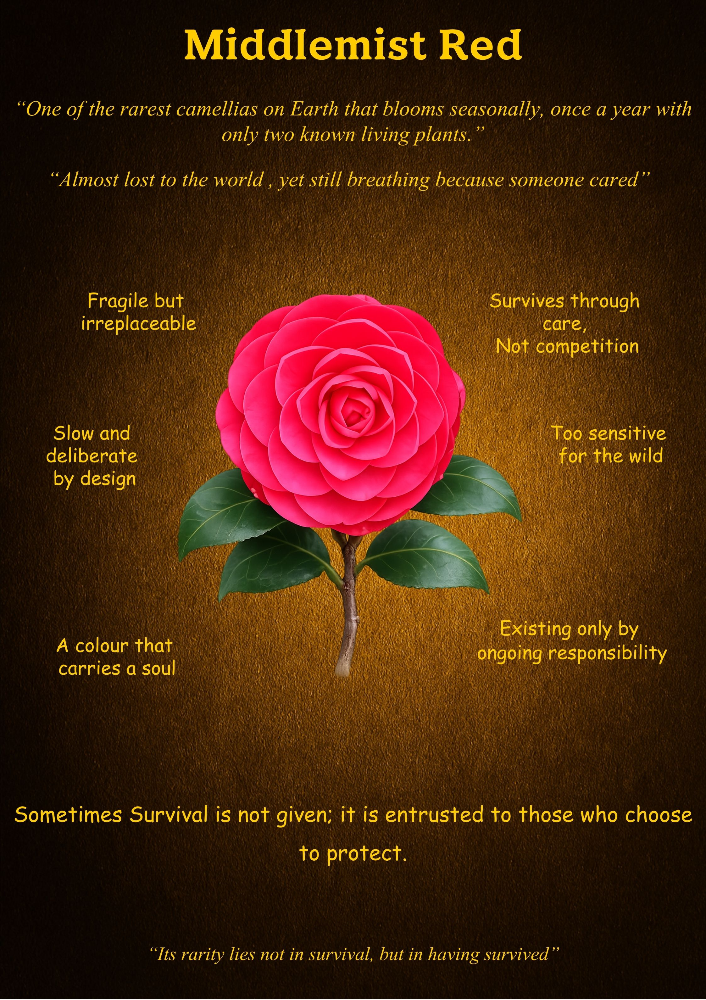

Middlemist Red
"Almost lost to the world, yet still breathing because someone cared."
What is Unique
The Middlemist Red is a ghost of the botanical world. It is one of the rarest camellias on Earth, with only two known living plants remaining—one in New Zealand and one in the United Kingdom. It blooms seasonally, once a year, producing a vibrant pink-red flower that serves as a living connection to a lost lineage. It is a biological rarity that exists on the thin edge between existence and memory.
Overall Synthesis
This exhibit explores the "Grace of Stewardship." The Middlemist Red represents a value that cannot survive in the wild competition of the modern world. Its survival is not a product of its own aggression, but of its irreplaceability. It teaches us that some of the most precious aspects of life—culture, kindness, or rare beauty—require deliberate protection to remain part of our human story.
Its Functioning Systems
Principles & Wisdom
The Middlemist Red offers a profound lesson on the **Sacredness of Protection**. It reminds us that **"Sometimes Survival is not given; it is entrusted to those who choose to protect."** In a world that often ignores the fragile, this bloom asks us to identify what is irreplaceable in our own lives—whether it is a value, a relationship, or a dream—and take responsibility for its breath. Its rarity lies not just in the fact that it survived, but in the history of the care that made that survival possible.